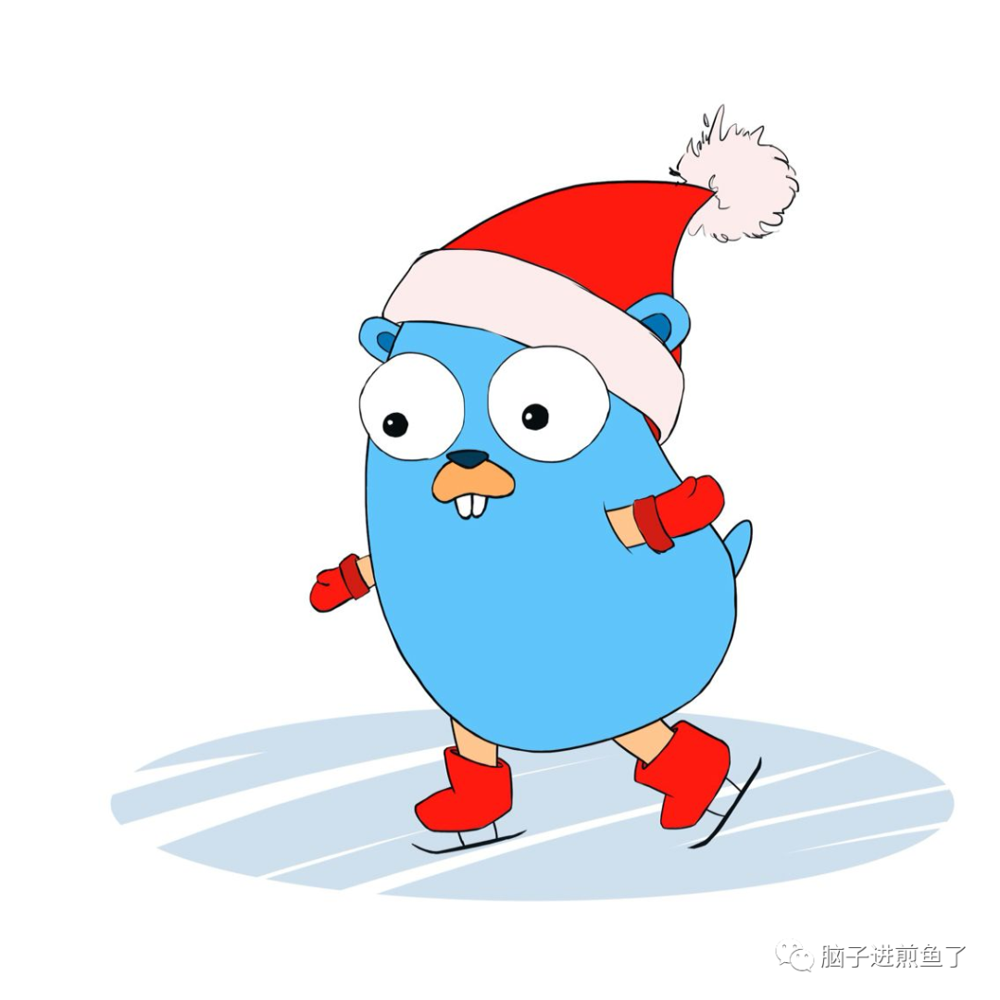

Go1.16 新特性：一文快速上手 Go embed
以下内容转载自煎鱼的blog
大家好，我是正在沉迷学习煎鱼的煎鱼。
在以前，很多从其他语言转过来 Go 语言的同学会问到，或是踩到一个坑。就是以为 Go 语言所打包的二进制文件中会包含配置文件的联同编译和打包。

结果往往一把二进制文件挪来挪去，就无法把应用程序运行起来了。因为无法读取到静态文件的资源。
无法将静态资源编译打包进二进制文件的话，通常会有两种解决方法：
第一种是识别这类静态资源，是否需要跟着程序走。
第二种就是考虑将其打包进二进制文件中。
第二种情况的话，Go 以前是不支持的，大家就会去借助各种花式的开源库，例如：go-bindata/go-bindata 来实现。
但从在 Go1.16 起，Go 语言自身正式支持了该项特性，今天我们将通过这篇文章快速了解和学习这项特性。
基本使用
演示代码：1
2
3
4
5
6
7
8import _ "embed"
//go:embed hello.txt
var s string
func main() {
print(s)
}
我们首先在对应的目录下创建了 hello.txt 文件，并且写入文本内容 “吃煎鱼”。
在代码中编写了最为核心的 //go:embed hello.txt 注解。注解的格式很简单，就是 go:embed 指令声明，外加读取的内容的地址，可支持相对和绝对路径。
输出结果：
吃煎鱼
读取到静态文件中的内容后自动赋值给了变量 s，并且在主函数中成功输出。
而针对其他的基础类型，Go embed 也是支持的：1
2
3
4
5
6
7
8
9
10
11
12
13
14
15
16//go:embed hello.txt
var s string
//go:embed hello.txt
var b []byte
//go:embed hello.txt
var f embed.FS
func main() {
print(s)
print(string(b))
data, _ := f.ReadFile("hello.txt")
print(string(data))
}
输出结果：
吃煎鱼
吃煎鱼
吃煎鱼
我们同时在一个代码文件中进行了多个 embed 的注解声明。
并且针对 string、slice、byte、fs 等多种类型进行了打包，也不需要过多的处理，非常便利。
拓展用法
除去基本用法完，embed 本身在指令上也支持多种变形：1
2
3
4
5
6
7
8
9
10//go:embed hello1.txt hello2.txt
var f embed.FS
func main() {
data1, _ := f.ReadFile("hello1.txt")
fmt.Println(string(data1))
data2, _ := f.ReadFile("hello2.txt")
fmt.Println(string(data2))
}
在指定 go:embed 注解时可以一次性多个文件来读取，并且也可以一个变量多行注解：
//go:embed hello1.txt
//go:embed hello2.txt
var f embed.FS
也可以通过在注解中指定目录 helloworld，再对应读取文件：1
2
3
4
5
6
7
8
9
10//go:embed helloworld
var f embed.FS
func main() {
data1, _ := f.ReadFile("helloworld/hello1.txt")
fmt.Println(string(data1))
data2, _ := f.ReadFile("helloworld/hello2.txt")
fmt.Println(string(data2))
}
同时既然能够支持目录读取，也能支持贪婪模式的匹配：
//go:embed helloworld/*
var f embed.FS
可能会有小伙伴注意到，embed.FS 也能调各类文件系统的接口，其实本质是 embed.FS 实现了 io/fs 接口。
只读属性
在 embed 所提供的 FS 中，我们可以发现其都是打开和只读方法：
type FS
func (f FS) Open(name string) (fs.File, error)
func (f FS) ReadDir(name string) ([]fs.DirEntry, error)
func (f FS) ReadFile(name string) ([]byte, error)
根据此也可以确定 embed 所打包进二进制文件的内容只允许读取，不允许变更。
更抽象来讲就是在编译期就确定了 embed 的内容，在运行时不允许修改，保证了一致性。
总结
通过 Go1.16 正式提供的 embed 特性，可以实现原生就支持静态资源文件的嵌入。整体如下：
在功能上：能够将静态资源嵌入二进制文件中，在运行时可以打开和读取相关的打包后的静态文件。
在安全上：是在编译期编译嵌入，在运行时不支持修改。
在使用上：
支持单文件读取：go:embed hello.txt。
支持多文件读取：go:embed hello1.txt、go:embed hello2.txt。
支持目录读取：go:embed helloworld。
支持贪婪匹配：go:embed helloworld/*。
总的来讲，Go1.16 embed 特性很好的填补了 Go 语言在打包静态文件资源的一块原生空白领域。同时也说明了 Go 官方的确在不断地吸收社区的一些良好的想法和经验。